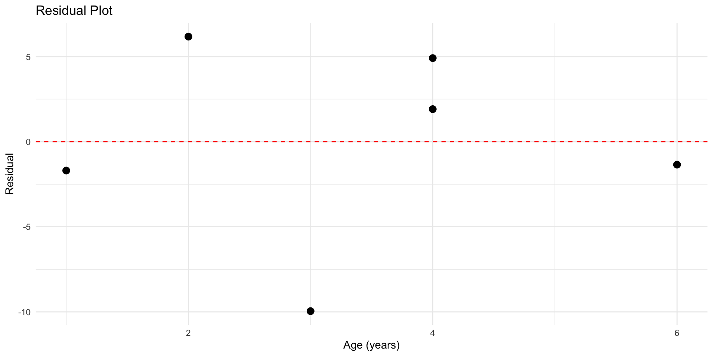

cars <- c(63.0, 29.0, 20.8, 19.1, 13.4, 8.5)
revenue <- c(7.0, 3.9, 2.1, 2.8, 1.4, 1.5)
df <- data.frame(cars, revenue)
p1 <- ggplot(df, aes(x = cars, y = revenue)) +
geom_point(size = 3, color = "steelblue") +
labs(x = "Cars (in 10,000s)", y = "Revenue ($ billions)",
title = "Car Rental Companies") +
theme_minimal()Statistics
Chapter 10: Correlation and Regression
Yu-You Liou
Shih Chien University
2026-08-03
Overview
Researchers often ask: Is there a relationship between two variables, and if so, how strong is it?
This chapter addresses four key questions:
- Are two variables linearly related?
- If so, how strong is that relationship?
- What type of relationship exists (positive, negative, linear, curvilinear)?
- What predictions can be made from the relationship?
Tools: Scatter plots, correlation coefficients, regression lines, and prediction intervals.
Section 10-1: Scatter Plots and Correlation
Key Terms
Note
- Independent variable (x): The predictor variable — can be controlled or manipulated.
- Dependent variable (y): The response variable — its value depends on x.
- Scatter plot: A graph of ordered pairs (x, y) used to visually assess the relationship between two variables.
- Positive relationship: Both variables move in the same direction.
- Negative relationship: Variables move in opposite directions.
Example 10-1
Car Rental Companies — Scatter Plot
Construct a scatter plot for the following car rental company data:
| Company | Cars ($10,000) | Revenue (\$ billions) | | |
|---|---|---|
| A | 63.0 | 7.0 |
| B | 29.0 | 3.9 |
| C | 20.8 | 2.1 |
| D | 19.1 | 2.8 |
| E | 13.4 | 1.4 |
| F | 8.5 | 1.5 |
Example 10-1
Solution
Draw figure
Example 10-1
Example 10-2
Absences and Final Grades — Scatter Plot
Construct a scatter plot for the number of absences and final grades for seven statistics students:
| Student | Absences x | Final Grade y (%) |
|---|---|---|
| A | 6 | 82 |
| B | 2 | 86 |
| C | 15 | 43 |
| D | 9 | 74 |
| E | 12 | 58 |
| F | 5 | 90 |
| G | 8 | 78 |
Example 10-2
Solution
Draw figure
absences <- c(6, 2, 15, 9, 12, 5, 8)
grade <- c(82, 86, 43, 74, 58, 90, 78)
df2 <- data.frame(absences, grade)
p2 <- ggplot(df2, aes(x = absences, y = grade)) +
geom_point(size = 3, color = "tomato") +
labs(x = "Number of Absences", y = "Final Grade (%)",
title = "Absences vs. Final Grade") +
theme_minimal()Example 10-2
Example 10-3
Age and Wealth — Scatter Plot
A researcher examines the relationship between age and net worth (in $ billions) for the wealthiest people in the U.S.:$
| Person | Age x | Wealth y ($ billions) |
|---|---|---|
| A | 73 | 16 |
| B | 65 | 26 |
| C | 53 | 50 |
| D | 54 | 21.5 |
| E | 79 | 40 |
| F | 69 | 16 |
| G | 61 | 19.6 |
| H | 65 | 19 |
Example 10-3
Solution
Draw figure
Example 10-3
The Pearson Correlation Coefficient
Note
The Pearson product moment correlation coefficient (r) measures the strength and direction of the linear relationship between two variables.
r = \frac{n\sum xy - (\sum x)(\sum y)}{\sqrt{[n\sum x^2 - (\sum x)^2][n\sum y^2 - (\sum y)^2]}}
- Range: -1 \leq r \leq +1
- Close to +1: strong positive relationship
- Close to −1: strong negative relationship
- Close to 0: weak or no linear relationship
Assumptions: Random sample; approximately linear relationship; interval/ratio data; bivariate normal distribution.
Example 10-4
Correlation for Car Rental Companies
Compute the correlation coefficient for the car rental data from Example 10-1.
Example 10-4
Solution
Mathematical solution
Build the calculation table:
| Company | x | y | xy | x^2 | y^2 |
|---|---|---|---|---|---|
| A | 63.0 | 7.0 | 441.00 | 3969.00 | 49.00 |
| B | 29.0 | 3.9 | 113.10 | 841.00 | 15.21 |
| C | 20.8 | 2.1 | 43.68 | 432.64 | 4.41 |
| D | 19.1 | 2.8 | 53.48 | 364.81 | 7.84 |
| E | 13.4 | 1.4 | 18.76 | 179.56 | 1.96 |
| F | 8.5 | 1.5 | 12.75 | 72.25 | 2.25 |
| \sum | 153.8 | 18.7 | 682.77 | 5859.26 | 80.67 |
r = \frac{6(682.77) - (153.8)(18.7)}{\sqrt{[6(5859.26) - 153.8^2][6(80.67) - 18.7^2]}} \approx \boxed{0.982}
Example 10-4
Solution
R implementation
Example 10-5
Correlation for Absences and Final Grades
Compute the correlation coefficient for the absences and final grade data from Example 10-2.
Example 10-5
Solution
R implementation
r = -0.9442 Strong negative relationship — more absences, lower grade.Result: r \approx -0.944 → strong negative linear relationship.
Example 10-6
Correlation for Age and Wealth
Compute the correlation coefficient for the age and wealth data from Example 10-3.
Example 10-6
Solution
R implementation
r = -0.1763 Very weak negative relationship — r is close to 0.Result: r \approx -0.176 → very weak relationship, likely due to chance.
Testing the Significance of r
Note
To determine whether r reflects a true linear relationship (and not just sampling error), we test:
H_0: \rho = 0 \quad H_1: \rho \neq 0
t test for the correlation coefficient: t = r\sqrt{\frac{n-2}{1-r^2}}, \quad d.f. = n-2
Alternatively, use Table I (critical values of r) directly — no need to compute t.
Example 10-7
Test Significance of r = 0.982
Test whether the correlation r = 0.982 from Example 10-4 is significant at \alpha = 0.05.
Example 10-7
Solution
Solve
Step 1: H_0: ρ = 0 H_1: ρ \neq 0
Step 2: d.f. = 6 − 2 = 4; CV = $$2.776 (from t-table)
Step 3: t = 0.982\sqrt{\frac{6-2}{1-0.982^2}} = 0.982\sqrt{\frac{4}{0.0356}} \approx 10.4
Step 4: |10.4| > 2.776 → Reject H_0
Step 5: There is a significant linear relationship between fleet size and revenue.
Example 10-7
Solution
R implementation
r = 0.982 t = 10.3921 P-value = 0.000484 Decision: Reject H0 Example 10-8
Test Significance Using Table I (r = −0.176)
Using Table I, test the significance of r = −0.176 from Example 10-6 at \alpha = 0.01.
Example 10-8
Solution
Solve
Step 1: H_0: \rho = 0 H_1: \rho \neq 0
Step 2: n = 8, so d.f. = 8 − 2 = 6. From Table I, with d.f. = 6 and \alpha = 0.01, the critical value is 0.834. A significant relationship requires r > +0.834 or r < -0.834.
(Equivalently, r_{crit} = \sqrt{t^2/(t^2 + d.f.)} = \sqrt{3.707^2/(3.707^2 + 6)} \approx 0.834 using t_{0.005,6} = 3.707.)
Step 3: |r| = 0.176 < 0.834, so r falls in the nonrejection region.
Step 4: Do not reject H_0.
Step 5: There is not enough evidence to say that a significant linear relationship exists between age and wealth.
Correlation and Causation
Note
A significant correlation between two variables does not prove causation. Possible explanations include:
- Direct cause-and-effect (x causes y)
- Reverse causation (y causes x)
- Lurking variable — a third variable causes both x and y
- Complex interrelationships among many variables
- Coincidence — the relationship is due to chance
Always interpret a significant r cautiously and consider alternative explanations.
Section 10-2: Regression
The Regression Line (Line of Best Fit)
Note
When r is significant, we can describe the linear relationship with the regression line:
\hat{y} = a + bx
where: b = \frac{n\sum xy - (\sum x)(\sum y)}{n\sum x^2 - (\sum x)^2}
a = \frac{(\sum y)(\sum x^2) - (\sum x)(\sum xy)}{n\sum x^2 - (\sum x)^2}
- b = slope (marginal change in y per one-unit increase in x)
- a = y-intercept
- Round a and b to three decimal places
Example 10-9
Regression Line for Car Rental Data
Find the equation of the regression line for the car rental data from Example 10-4.
Known values: n = 6, \sum x = 153.8, \sum y = 18.7, \sum xy = 682.77, \sum x^2 = 5859.26
Example 10-9
Solution
Solve
Solution:
b = \frac{6(682.77) - (153.8)(18.7)}{6(5859.26) - 153.8^2} = \frac{4096.62 - 2876.06}{35155.56 - 23653.44} = \frac{1220.56}{11502.12} \approx 0.106
a = \frac{(18.7)(5859.26) - (153.8)(682.77)}{6(5859.26) - 153.8^2} \approx 0.396
\boxed{\hat{y} = 0.396 + 0.106x}
Example 10-9
Example 10-9
Example 10-10
Regression Line for Absences and Grades
Find the equation of the regression line for the absences/grade data from Example 10-2.
n = 7, \sum x = 57, \sum y = 511, \sum xy = 3745, \sum x^2 = 579
Example 10-10
Solution
Solve
b = \frac{7(3745) - (57)(511)}{7(579) - 57^2} = \frac{26215 - 29127}{4053 - 3249} = \frac{-2912}{804} \approx -3.622
a = \frac{(511)(579) - (57)(3745)}{7(579) - 57^2} = \frac{295869 - 213465}{804} \approx 102.493
\boxed{\hat{y} = 102.493 - 3.622x}
Example 10-10
Example 10-10
Example 10-11
Predicting Revenue
Using the regression equation from Example 10-9, predict the revenue of a car rental agency with 200,000 automobiles.
Example 10-11
Solution
Since x values are in units of 10,000: x = 200{,}000 \div 10{,}000 = 20
\hat{y} = 0.396 + 0.106(20) = 0.396 + 2.120 = \boxed{2.516 \text{ billion dollars}}
Predicted revenue for 200,000 cars: $ 2.519 billion(R uses the unrounded coefficients and gives 2.519; the hand value 2.516 uses a and b rounded to three decimals.)
Key point
Caution: Only predict within the range of observed x values. Extrapolation beyond the data is unreliable.
Section 10-3: Coefficient of Determination and Standard Error of the Estimate
Types of Variation
Note
The total variation in y can be decomposed:
\underbrace{\sum(y - \bar{y})^2}_{\text{Total variation}} = \underbrace{\sum(\hat{y} - \bar{y})^2}_{\text{Explained variation}} + \underbrace{\sum(y - \hat{y})^2}_{\text{Unexplained variation}}
- Explained variation: attributed to the linear relationship with x
- Unexplained variation: due to chance or other factors (also called residual variation)
Coefficient of Determination
Note
r^2 = \frac{\text{Explained variation}}{\text{Total variation}}
Equivalently, r^2 is obtained by squaring the correlation coefficient.
- r^2 expressed as a percentage tells us what proportion of variation in y is explained by x.
- Coefficient of nondetermination: 1 - r^2 (unexplained proportion)
Example: If r = 0.982, then r^2 = 0.964, meaning 96.4% of the variation in revenue is explained by fleet size.
Coefficient of Determination — R Examples
r = 0.982 → r² = 0.9643 (96.4% explained)
r = -0.944 → r² = 0.8911 (89.1% explained)
r = -0.176 → r² = 0.0310 (3.1% explained)
r = 0.900 → r² = 0.8100 (81.0% explained)
r = 0.600 → r² = 0.3600 (36.0% explained)Standard Error of the Estimate
Note
The standard error of the estimate (s_{est}) measures the spread of observed y values around the regression line:
s_{est} = \sqrt{\frac{\sum(y - \hat{y})^2}{n-2}}
Computational shortcut:
s_{est} = \sqrt{\frac{\sum y^2 - a\sum y - b\sum xy}{n-2}}
The smaller s_{est}, the better the regression line fits the data.
Example 10-12
Copy Machine Maintenance Costs
A researcher finds a significant relationship between the age of a copy machine (years) and its monthly maintenance cost (dollars). The regression equation is \hat{y} = 55.57 + 8.13x. Find the standard error of the estimate.
| Machine | Age x | Cost y |
|---|---|---|
| A | 1 | 62 | |
| B | 2 | 78 | |
| C | 3 | 70 | |
| D | 4 | 90 | |
| E | 4 | 93 | |
| F | 6 | 103 | |
Example 10-12
Solution
Mathematical solution
Compute \hat{y} and residuals for each observation:
| x | y | \hat{y} | y - \hat{y} | (y - \hat{y})^2 |
|---|---|---|---|---|
| 1 | 62 | 63.70 | −1.70 | 2.89 |
| 2 | 78 | 71.83 | 6.17 | 38.07 |
| 3 | 70 | 79.96 | −9.96 | 99.20 |
| 4 | 90 | 88.09 | 1.91 | 3.65 |
| 4 | 93 | 88.09 | 4.91 | 24.11 |
| 6 | 103 | 104.35 | −1.35 | 1.82 |
| \sum | 169.74 |
s_{est} = \sqrt{\frac{169.74}{6-2}} = \sqrt{42.44} \approx \boxed{6.51}
Example 10-12
Solution
R implementation
Intercept a = 55.565 Slope b = 8.13 Standard error of estimate s_est = 6.5142 r² = 0.8566 Example 10-13
Standard Error via Computational Formula
Using the shortcut formula and the data from Example 10-12 (where \sum y^2 = 42,186, \sum y = 496, \sum xy = 1778, a = 55.57, b = 8.13):
Example 10-13
Solution
R implementation
s_{est} = \sqrt{\frac{42186 - 55.57(496) - 8.13(1778)}{6-2}} \approx \boxed{6.48}
s_est (shortcut formula) = 6.5142 (Small discrepancy due to rounding in a and b.)
Prediction Interval
Note
A prediction interval provides a range within which a future individual y value is expected to fall for a given x:
\hat{y} \pm t_{\alpha/2} \cdot s_{est} \sqrt{1 + \frac{1}{n} + \frac{n(x - \bar{X})^2}{n\sum x^2 - (\sum x)^2}}
with d.f. = n - 2
Example 10-14
95% Prediction Interval
For the copy machine data, find the 95% prediction interval for the monthly maintenance cost when the machine is 3 years old.
Example 10-14
Solution
Solve
Known: \sum x = 20, \sum x^2 = 82, \bar{X} = 20/6 = 3.3, \hat{y}(3) = 79.96, s_{est} = 6.48, t_{0.025, 4} = 2.776
\text{SE factor} = \sqrt{1 + \frac{1}{6} + \frac{6(3-3.3)^2}{6(82)-20^2}} = \sqrt{1 + 0.167 + \frac{0.54}{92}} \approx 1.08
79.96 \pm 2.776(6.48)(1.08) = 79.96 \pm 19.43
\boxed{60.53 < y < 99.39}
Example 10-14
Solution
R implementation
Predicted y at x=3: 79.96 95% Prediction Interval: ( 60.36 , 99.55 )R’s predict() gives the interval (60.36, 99.55), slightly different from the hand calculation (60.53, 99.39) because the hand calculation uses rounded values of a, b, s_{est}, and the SE factor. We are 95% confident the actual maintenance cost for a 3-year-old machine falls in this interval.
Residual Plot
x <- c(1, 2, 3, 4, 4, 6)
y <- c(62, 78, 70, 90, 93, 103)
model3 <- lm(y ~ x)
df_resid <- data.frame(x, residuals = resid(model3))
ggplot(df_resid, aes(x = x, y = residuals)) +
geom_point(size = 3) +
geom_hline(yintercept = 0, linetype = "dashed", color = "red") +
labs(title = "Residual Plot", x = "Age (years)", y = "Residual") +
theme_minimal()
If residuals are randomly scattered around 0, the linear model is appropriate.
Section 10-4: Multiple Regression (Optional)
Multiple Regression Overview
Note
Multiple regression uses two or more independent variables to predict a single dependent variable:
\hat{y} = a + b_1 x_1 + b_2 x_2 + \cdots + b_k x_k
- Each b_i is a partial regression coefficient: the change in y for a one-unit increase in x_i, holding all other x’s constant.
Assumptions: 1. Normality of y values for each x 2. Equal variances (homoscedasticity) 3. Linearity 4. Non-multicollinearity (independent variables not highly correlated) 5. Independence of observations
Multiple Regression: State Board Scores
State Board Scores
A nursing instructor wants to predict a student’s state board score (y) from GPA (x_1) and age (x_2). Data for 5 students:
| Student | GPA x_1 | Age x_2 | Score y |
|---|---|---|---|
| A | 3.2 | 22 | 550 |
| B | 2.7 | 27 | 570 |
| C | 2.5 | 24 | 525 |
| D | 3.4 | 28 | 670 |
| E | 2.2 | 23 | 490 |
Find the multiple regression equation.
Multiple Regression: State Board Scores
Solution
R implementation
Call:
lm(formula = score ~ gpa + age)
Residuals:
1 2 3 4 5
-5.364 -14.209 1.918 9.910 7.743
Coefficients:
Estimate Std. Error t value Pr(>|t|)
(Intercept) -44.810 69.247 -0.647 0.5839
gpa 87.640 15.237 5.752 0.0289 *
age 14.533 2.914 4.988 0.0379 *
---
Signif. codes: 0 '***' 0.001 '**' 0.01 '*' 0.05 '.' 0.1 ' ' 1
Residual standard error: 14.01 on 2 degrees of freedom
Multiple R-squared: 0.9787, Adjusted R-squared: 0.9574
F-statistic: 45.93 on 2 and 2 DF, p-value: 0.02131\boxed{\hat{y} = -44.81 + 87.64 \cdot \text{GPA} + 14.533 \cdot \text{Age}}
For a student with GPA = 3.0 and age = 25: \hat{y} = -44.81 + 87.64(3.0) + 14.533(25) \approx \mathbf{581}
Predicting with the Multiple Regression Equation
Predicted state board score: 581.4 Interpretation of coefficients: - For each 1-point increase in GPA (holding age constant), the score increases by about 87.64 points - For each 1-year increase in age (holding GPA constant), the score increases by about 14.53 points
Multiple Correlation Coefficient R
Note
The multiple correlation coefficient R measures the strength of the relationship between all predictors and the dependent variable:
R = \sqrt{\frac{r_{yx_1}^2 + r_{yx_2}^2 - 2r_{yx_1}r_{yx_2}r_{x_1x_2}}{1 - r_{x_1x_2}^2}}
- Range: 0 to 1 (never negative)
- R^2 = coefficient of multiple determination (proportion of variation explained)
- 1 - R^2 = residual/error variation
Example 10-15
Multiple Correlation Coefficient
For the state board score data, find R given: r_{yx_1} = 0.845, r_{yx_2} = 0.791, r_{x_1x_2} = 0.371
Example 10-15
Solution
R implementation
R = \sqrt{\frac{0.845^2 + 0.791^2 - 2(0.845)(0.791)(0.371)}{1 - 0.371^2}} = \sqrt{\frac{0.8438}{0.8624}} \approx \boxed{0.989}
Multiple correlation coefficient R = 0.9892 Coefficient of multiple determination R² = 0.9784 F Test for Significance of R
Note
Test H_0: \rho = 0 vs H_1: \rho \neq 0 using:
F = \frac{R^2/k}{(1-R^2)/(n-k-1)}
- d.f.N. = k d.f.D. = n − k − 1
where k = number of independent variables, n = number of data groups.
Example 10-16
F Test for Multiple Correlation
Test the significance of R = 0.989 at \alpha = 0.05 for the state board data (n = 5, k = 2).
Example 10-16
Solution
R implementation
F = \frac{0.989^2/2}{(1-0.989^2)/(5-2-1)} = \frac{0.978121/2}{0.021879/2} = \frac{0.489061}{0.010940} \approx 44.71
Critical value (Table H, d.f.N. = 2, d.f.D. = 2, \alpha = 0.05): 19.00
44.71 > 19.00 → Reject H_0 — significant relationship exists.
Example 10-17
Adjusted R^2
Calculate the adjusted R^2 for R = 0.989, n = 5, k = 2.
The adjusted R^2 corrects for the number of predictors and sample size:
R^2_{adj} = 1 - \frac{(1-R^2)(n-1)}{n-k-1}
It is always \leq R^2 and penalizes for adding unnecessary predictors.
Example 10-17
Solution
Key Takeaways
| Concept | Formula | Purpose |
|---|---|---|
| Correlation coefficient | r = \frac{n\sum xy - \sum x \sum y}{\sqrt{[n\sum x^2 - (\sum x)^2][n\sum y^2 - (\sum y)^2]}} | Strength & direction of linear relationship |
| t test for r | t = r\sqrt{\frac{n-2}{1-r^2}}, d.f. = n−2 | Test if r is significant |
| Regression line | \hat{y} = a + bx | Predict y from x |
| Coefficient of determination | r^2 | % of variation in y explained by x |
| Concept | Formula | Purpose |
|---|---|---|
| Standard error of estimate | s_{est} = \sqrt{\frac{\sum(y-\hat{y})^2}{n-2}} | Accuracy of predictions |
| Prediction interval | \hat{y} \pm t_{\alpha/2} \cdot s_{est} \cdot \text{SE factor} | Range for individual y |
| Multiple R | R = \sqrt{\frac{r_{yx_1}^2 + r_{yx_2}^2 - 2r_{yx_1}r_{yx_2}r_{x_1x_2}}{1-r_{x_1x_2}^2}} | Multiple predictors |
Acknowledgement
Copyright notice. These teaching materials have been adapted from Bluman, A. G. (2012). Elementary statistics: A step by step approach (8th ed.). McGraw-Hill. All rights are reserved by the original authors and publishers.
Non-commercial use only. These materials are strictly intended for educational purposes and must not be used for commercial gain or profit.
Proper attribution. Any reproduction, distribution, or use of these materials must provide proper attribution to the original source.

Elementary Statistics: A Step by Step Approach